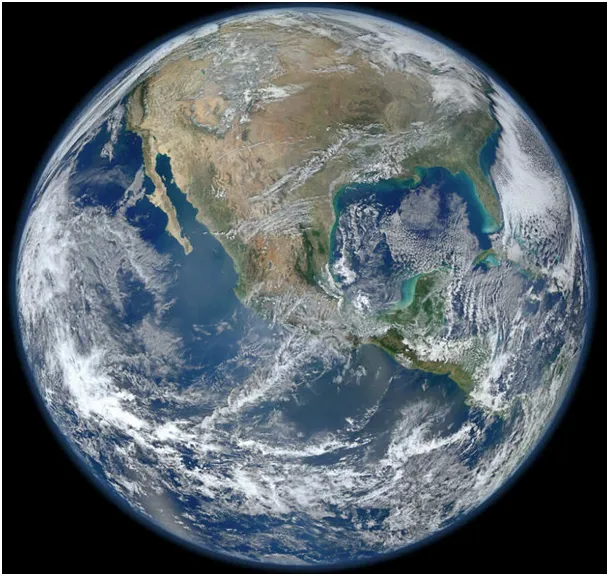
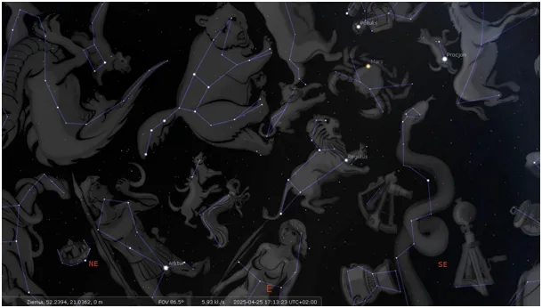
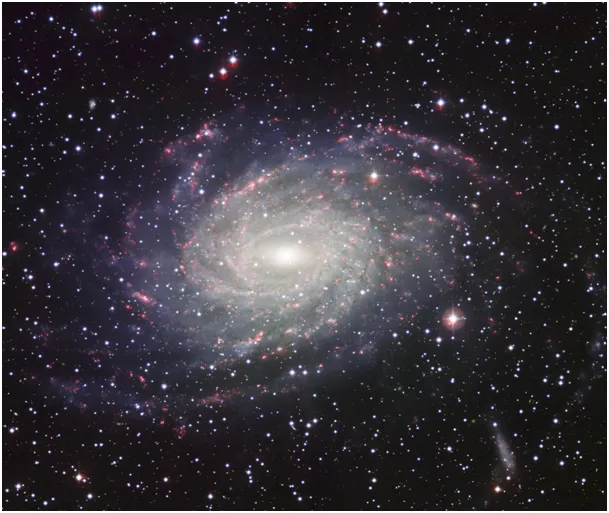
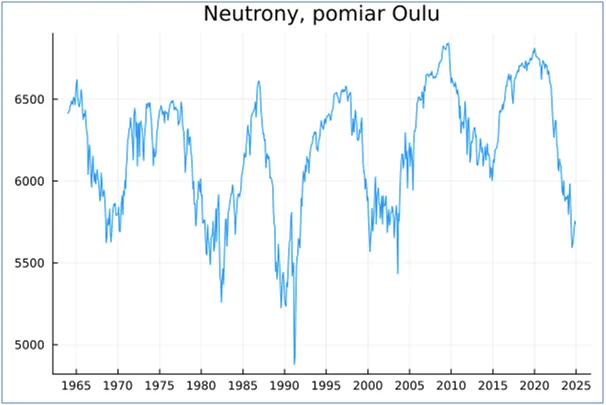
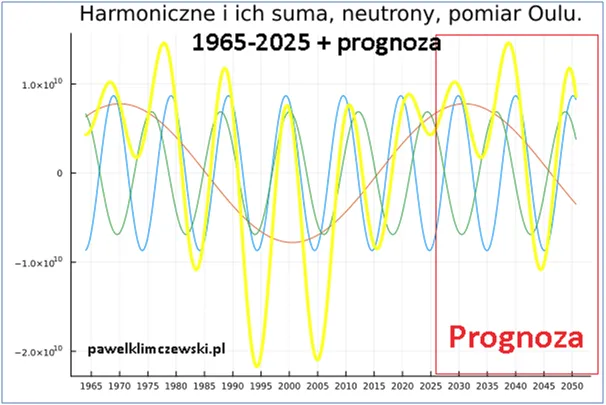

Kosmiczna pogoda. Dosłownie!
Kolejny, trzeci już dowód, na słoneczne i kosmiczne źródło zmian klimatu na Ziemi
2025.04.26
Fascynacja człowieka Kosmosem sięga pierwszej nocy, gdy ujrzał on gwiazdy na niebie. Ludzka wyobraźnia szybko połączyła gwiazdy w kształty i nadała im ziemskie znaczenie, zarazem pozostawiając niebiosom pierwszeństwo w ich stworzeniu. Lisa, lwa i inne zwierzęta znajdujemy w najstarszych symbolikach zodiaku. Wpływ Słońca na życie ludzi jest niezaprzeczalny, ale najstarsze kultury uznawały wpływ całego Kosmosu na losy ludzkości. Od stulecia wiemy dokładnie, że z Kosmosu dociera do Ziemi zabójcze promieniowanie, ma ono wpływ na wiele przemian chemicznych i biologicznych.

W ostatniej dekadzie Henrik Svensmark udowodnił, że ma ono znaczący wpływ na proces powstawania chmur. Jak się okazuje, przeźroczysta para wodna zmieszana z powietrzem potrzebuje jąder kondensacji w postaci specyficznych jonów, aby gazowe cząsteczki H2O zaczęły się łączyć w mikrokrople tworząc białe obłoki. Biały przedmiot odbija całe spektrum światła słonecznego z powrotem w Kosmos dlatego gęsta, wielka chmura od dołu jest prawie czarna, a gdy mamy pochmurny dzień niebo jest szare i jest chłodno.
Ziemskie zachmurzenie zależy od tego ile promieniowania kosmicznego dociera do Ziemi, a to z kolei regulują cykle słoneczne od których zależna jest najważniejsza bariera broniąca nas przed wysokoenergetycznym promieniowaniem, jonosfera.
Pierwszy wykres pokazuje jak w cyklach 11 letnich zmienia się liczba neutronów w naszym otoczeniu. Neutrony te są wynikiem rozpadu cząsteczek atakowanych kosmicznym promieniowaniem. Kosmos jest wielki i ciągle dzieją się w nim spektakularne, dynamiczne zjawiska, przy których wybuch bomby atomowej majaczy jak gasnąca iskierka nad kominem. Eksplozje gwiazd, tzw. supernowe, implozje mgławic, wszystkie przemiany generują promieniowanie we wszystkich zakresach.

Opublikowałem dwie prognozy dla Ziemi na najbliższe dekady. Pierwsza na podstawie obserwowanej aktywności słonecznej: https://pawelklimczewski.pl/2024/02/03/kosmiczna-prognoza-do-2045-globalne-oziebienie/
Oraz drugą na podstawie liniowej emanacji termiki planety jaką jest łączna energia cyklonów na Ziemi: https://pawelklimczewski.pl/2024/10/27/cyklony-i-slonce-postscriptum/
Są one bardzo podobne, ale nie muszą się one pokrywać dokładnie, ponieważ natężenie promieniowania kosmicznego nie jest stałe w długim terminie, ma bardziej losowy charakter, o wybuchu supernowej dowiemy się, gdy je zobaczymy.

Od ponad 60 lat zbierane są dane z pomiarów tego co do nas dociera z Kosmosu, jak pokazuje pierwszy wykres nie są to zmiany równe, cykle są raz dłuższe raz krótsze i wyraźnie widać, że już od trzech dekad systematycznie rosną, a w latach poprzednich spadały. na czynniki pierwsze. Używając transformacji Fouriera wyodrębniłem składowe sinusoidalne badanego zjawiska i pokazuję je na wykresie drugim. Matematyka jako królowa nauk poradziła sobie z "pływającym" cyklem 11 letnim, który to bywa raz krótszy raz dłuższy i efektem obliczeń są dwie sinusoidy w przybliżeniu 10 i 12 letnia przesunięte w fazie. Dokładnie jak energia cyklonów. Matematyka daje nam pewne narzędzia, aby takie dane rozłożyć na czynniki pierwsze. Używając transformacji Fouriera wyodrębniłem składowe sinusoidalne badanego zjawiska i pokazuję je na wykresie drugim. Matematyka jako królowa nauk poradziła sobie z "pływającym" cyklem 11 letnim, który to bywa raz krótszy raz dłuższy i efektem obliczeń są dwie sinusoidy w przybliżeniu 10 i 12 letnia przesunięta w fazie. Trzecią istotną harmoniczną jest sinusoida o długości 60 lat. Kto czytał teksty wyżej linkowane wie, że Słońce pulsuje nie tylko w cyklu 11 letnim, ale i długim ok. 120 letnim. Zatem nasza długa składowa (60 lat) może być połówkową harmoniczną tego cyklu, ale może być też tak, że to z Kosmosu napływają do nas coraz to większe dawki promieniowania. Jeśli to są zjawiska cykliczne możemy śmiało rozwinąć nasze sinusoidy w przyszłość i je zsumować co widać na wykresie drugim w kolorze żółtym.

Oto mamy po raz trzeci z różnych danych wszelkie przesłanki ku temu, by prognozować wzrost zachmurzenia dla naszej planety w najbliższych dekadach, a co za tym idzie do oziębiania się klimatu. W najbliższych latach będą to zmiany niewielkie, ale za lat 15 aura może wrócić do takiej jaką mieliśmy w latach 1970-1980. Oczywiście w tle czają się złośliwe prądy oceaniczne mogące regionalnie zmieniać klimat jak ma to obecnie w Europie przez chłodny Atlantyk powodujący u nas suszę.
Paweł Klimczewski